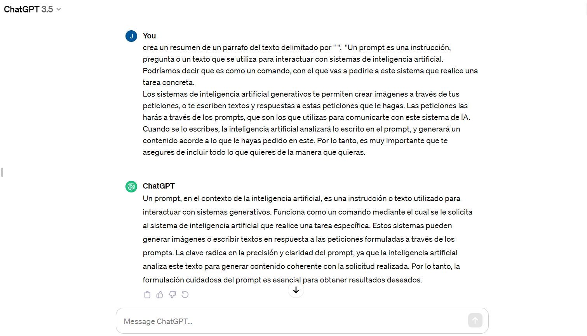
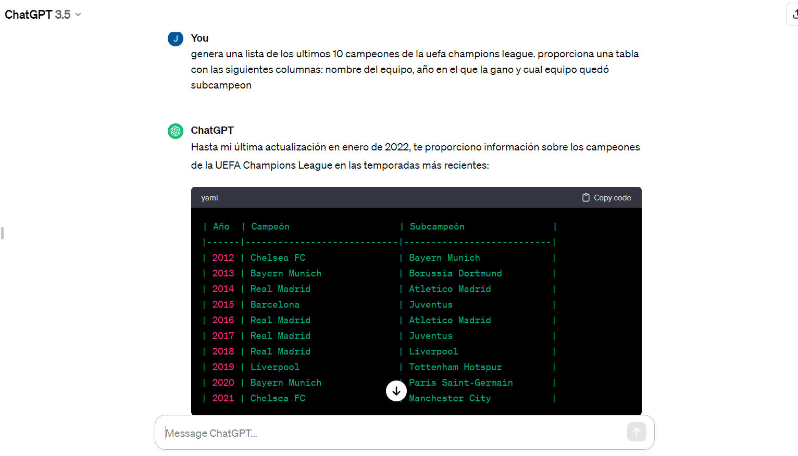
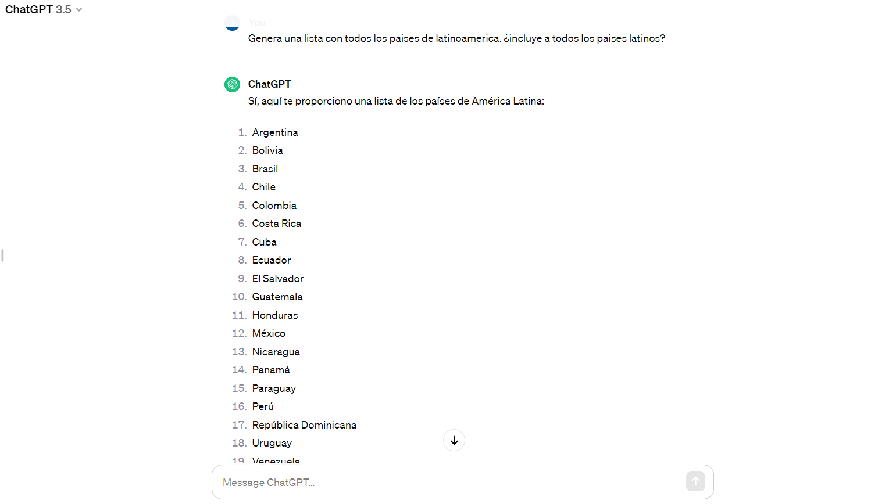
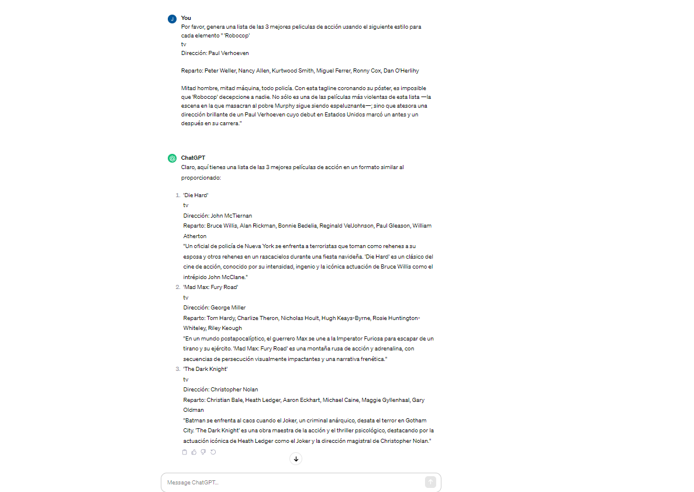
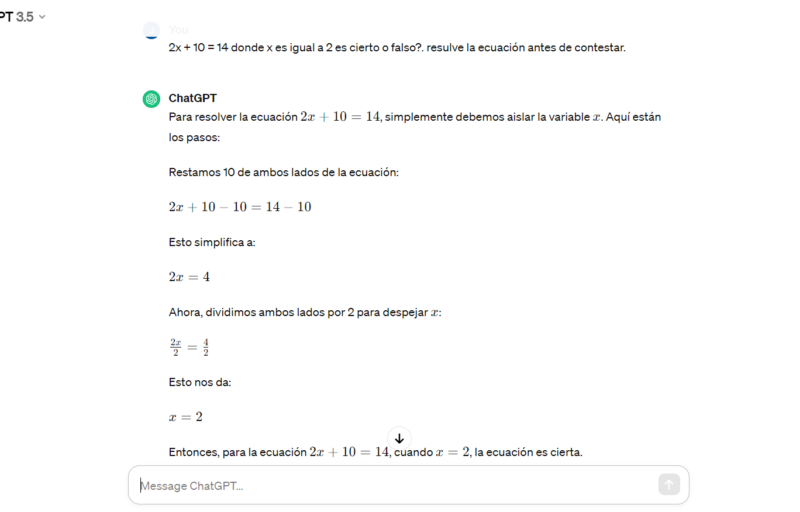

Lista de pasos para crear prompts efectivos
- Delimitar siempre el prompt: indicar que es lo que debe de hacer y delimitar sobre de que lo debe de hacer.
Ejemplo:

- Pedir output estructurado: pedir al modelo que produzca un resultado que sea fácil de leer y fácil de comprender.
Ejemplo:

- Pedir si se cumplen las condiciones: reducimos el riesgo que de recibir una respuesta equivocada.
Ejemplo:

- Ofrecer un ejemplo del resultado: ayudar al lenguaje a entder que estamos esperando de él.
Ejemplo:

- Especificar los pasos para seguir una tarea: indicar al modelo una serie de pasos para producir un resultado.
Ejemplo:
- Pedir al modelo que trabje en su propia solución.
Ejemplo:

- Retroalimentación: Evaluar los resultados y modificar el prompt para obtener mejores resultados.
- Resumir: ser espeficios en la forma de pedir el resumen.
- Inferencia: proceso en el que se utiliza la información disponible para llegar a una conclusión o deducción.